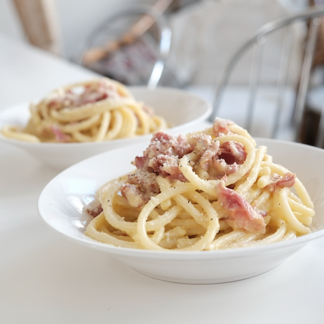

Spaghetti Carbonara
Spaghetti carbonara is traditionally made without cream
Many people argue that spaghetti carbonara must be made without cream. But the reality is, that many italian families make it with cream. The children love it. Each to his taste, I say. I like it without. Mainly because I want to taste the olive oil and pepper.
Ingredients
for two servings
- Spaghetti
- 1 Onion
- 1 Egg
- 100g Bacon
- 2 Ts Parmesan
- Pepper'n Salt
Steps
- Cook spaghetti and keep the noodle water in a glass
- Mix the eggs with parmesan to a thick paste
- Cook the Onions and the bacon in olive oil in a pan
- Switch to low heat and add the spaghetti
- Add the paste and mix everything
- If too thick, add noodle water
- Salt & Pepper